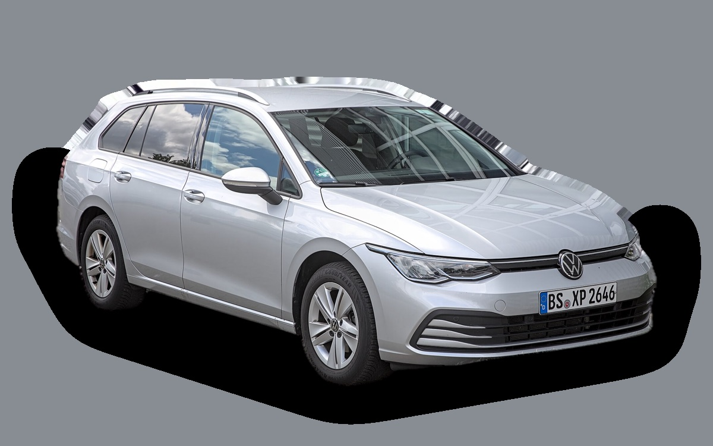
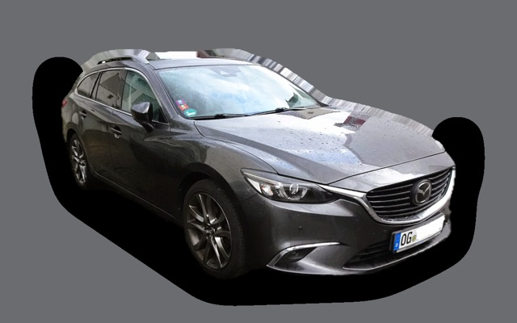
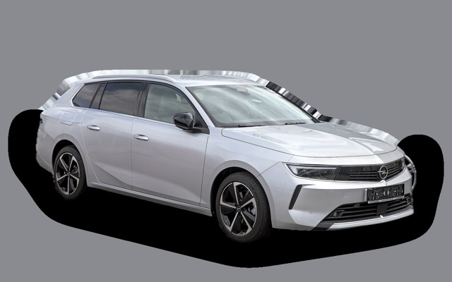
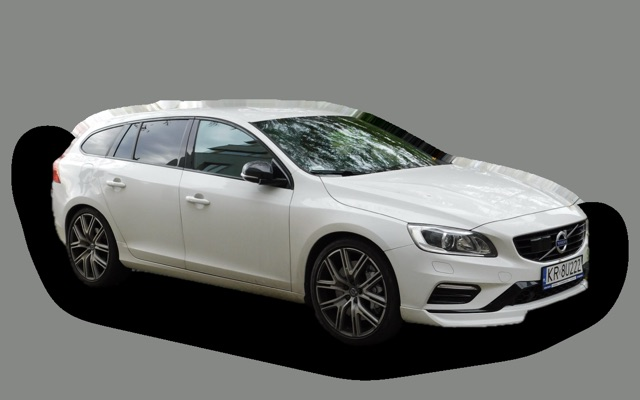

Vad kostar en Volkswagen Golf Sportscombi per månad?
En Volkswagen Golf Sportscombi från 2023 kostar cirka 3 640 kr i månaden, allt inräknat.


Månadskostnad per årsmodell
| Årsmodell | Version i beräkningen | Pris | Per månad | Betyg |
|---|---|---|---|---|
| 2026 | TSI 150 manuell, Life | 337 800 kr | 5 159 kr | C |
| 2023 | TSI 150 manuell, Life | 219 000 kr | 3 640 kr | A |
Räknat på 5 års ägande och 1 250 mil per år, med bränslepriser från 2026-10-22. Månadskostnaden innehåller värdeminskning, drivmedel, service och reparationer, försäkring och fordonsskatt.
Så fördelas kostnaden för en 2023:a
- Värdeminskning: 1 396 kr/mån
- Drivmedel: 1 271 kr/mån
- Service och reparationer: 521 kr/mån
- Försäkring: 374 kr/mån
- Fordonsskatt: 77 kr/mån
Leasa eller köpa ny?
Volkswagen Privatleasing erbjuder Golf Sportscombi Life Edition 1.5 eTSI 150 DSG från 3 995 kr i månaden i 36 månader och 1 000 mil per år. Så mycket kostar det jämfört med att köpa samma bil ny för 358 500 kr och sälja den efter 36 månader, räknat på 1 250 mil per år och 5 procents ränta.
Leasa är billigast 574 kr mindre per månad, 20 664 kr på 36 månader.
| Per månad | Leasa | Köpa |
|---|---|---|
| Leasingavgift, 1 250 mil per år | 4 162 kr | – |
| Uppläggnings- och aviavgift | 73 kr | – |
| Värdeminskning | – | 3 231 kr |
| Ränta på pengarna, 5 % | – | 1 251 kr |
| Service och reparationer | ingår | 326 kr |
| Drivmedel | 1 185 kr | 1 185 kr |
| Försäkring | 479 kr | 479 kr |
| Fordonsskatt | 504 kr | 504 kr |
| Totalt per månad | 6 404 kr | 6 978 kr |
| Totalt på 36 månader | 230 544 kr | 251 208 kr |
Du kör 250 mil mer per år än erbjudandet räknar med. Märkets pris för fler mil: 168 kr i månaden. Volkswagen Privatleasing: Golf Sportscombi Life Edition 1.5 eTSI 150 DSG, 36 månader, 1 000 mil per år, service ingår, rörlig avgift som följer räntan. Uppläggningsavgift 495 kr och aviavgift 59 kr i månaden. Källa: privatleasing.volkswagen.se, avläst 26 oktober 2026, gäller till och med 31 oktober 2026.
Köpa: 358 500 kr för en ny bil i samma version, och 242 172 kr tillbaka när du säljer den efter 3 år. Restvärdet bygger på annonspriserna för 3 år gamla bilar, justerat för att du kör 3 750 mil på 3 år i stället för typiska 5 800 mil. Räntan är vad pengarna kostar: ränta på ett billån, eller räntan du går miste om på sparade pengar. Drivmedel, försäkring och skatt är desamma. Övermil och onormalt slitage betalas när leasingbilen lämnas tillbaka, och byter du in en köpt bil hos en handlare får du oftast mindre än annonspriset.
Räkna med din egen körsträcka och ränta · Alla leasingbilar jämförda
Begagnatpriser i annonser
| Årsmodell | Medianpris | Annonser | Typiskt miltal |
|---|---|---|---|
| 2026 | 304 900 kr | 162 | 1 500 mil |
| 2025 | 294 900 kr | 68 | 2 100 mil |
| 2024 | 259 000 kr | 38 | 5 100 mil |
| 2023 | 259 900 kr | 37 | 5 200 mil |
| 2022 | 211 000 kr | 25 | 7 200 mil |
| 2021 | 202 000 kr | 13 | 9 900 mil |
Medianpriset i svenska annonser per årsmodell i oktober 2026 (källa: Blocket, AutoUncle). Annonspriser är utgångspriser, och slutpriset kan bli lägre.
Motorer och versioner
| Motor | Drivmedel | Effekt | 0–100 km/h | Förbrukning (WLTP) | Räckvidd | Årsmodeller | Pristillägg |
|---|---|---|---|---|---|---|---|
| TSI 150 manuell | Bensin | 150 hk | 8,7 s | 5,9 l/100 km | – | från 2021 | – |
| eTSI 150 DSG | Bensin | 150 hk | 8,5 s | 5,5 l/100 km | – | från 2021 | +21 000 kr |
| TSI 204 DSG 4MOTION | Bensin | 204 hk | 6,8 s | 7,2 l/100 km | – | från 2025 | +62 000 kr |
- Utrustning: Life, R-Line (+30 000 kr)
Fakta
- Kaross
- Kombi
- Årsmodeller
- sedan 2021
- Nypris från
- 337 800 kr
- Bagage
- 611 liter
- Euro NCAP
- 5 av 5 stjärnor
- Nybilsgaranti
- 3 år
- Driftsäkerhet
- 3,5 av 5
- Helförsäkring, uppskattning
- 5 900 kr/år
- Service, uppskattning
- 3 800 kr/år
Vanliga fel att ha koll på
- DSG-låda DQ200 (mekatronik, koppling), reparation cirka 20 000 kr
- Vattenpump och termostathus i plast läcker, reparation cirka 6 500 kr
- EGR och partikelfilter (TDI), reparation cirka 9 000 kr
- Haldex-pump (fyrhjulsdrift), reparation cirka 7 000 kr
- Infotainment (MIB3), reparation cirka 10 000 kr
Felen gäller vissa motorer och årsmodeller. I kalkylatorn räknas risken för just den version du väljer.
Fördelar och nackdelar
Fördel
En av Sveriges vanligaste kombibilar: stort bagage och snål.
Nackdel
Pekskärmsreglagen är krångliga och de första årsmodellerna hade mjukvarufel.
Liknande bilar

Mazda6 Kombi3 624 kr/mån som 2019:a
Opel Astra Sports Tourer3 661 kr/mån som 2023:a
Volvo V60 I3 661 kr/mån som 2015:a Peugeot 308 SW3 590 kr/mån som 2023:a
Peugeot 308 SW3 590 kr/mån som 2023:a Skoda Octavia Kombi3 517 kr/mån som 2023:a
Skoda Octavia Kombi3 517 kr/mån som 2023:a Volkswagen Passat B83 786 kr/mån som 2020:a
Volkswagen Passat B83 786 kr/mån som 2020:a
Uppdaterad 2026-10-26 · annonsdata okt 2026